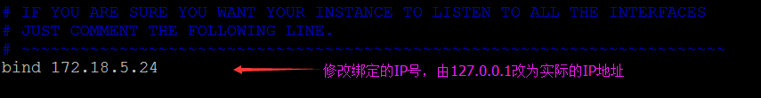
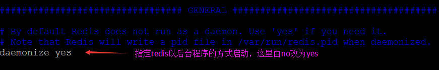
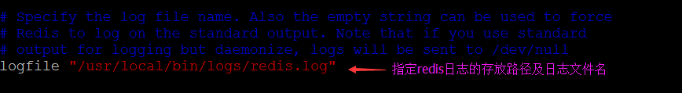
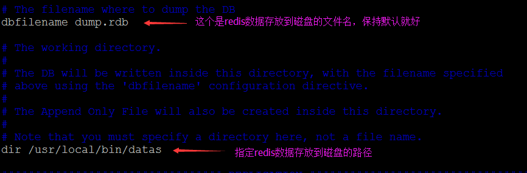
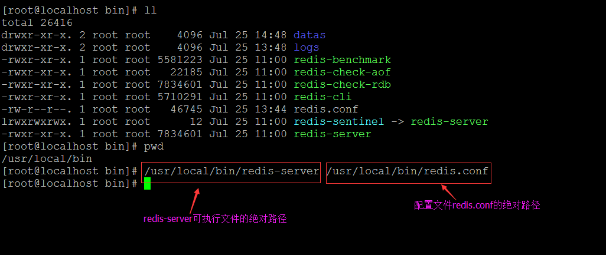
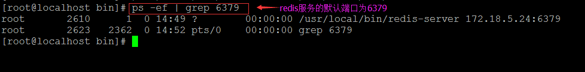
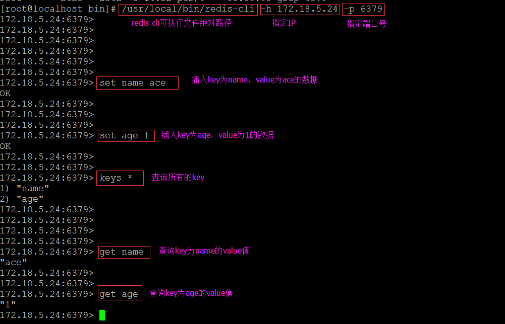
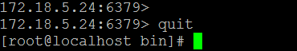
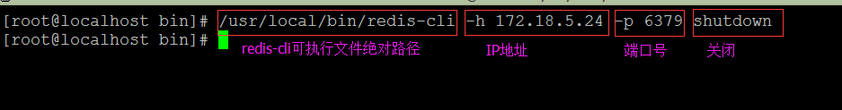

第一步：启动前的准备工作
1、将redis根路径->src下的redis.conf文件复制一份到指定的地方，这里复制到/usr/local/bin下，注意这里的redis根路径指的是redis的解压后的文件夹
2、在/usr/local/bin下新建logs文件夹用以存放redis的日志文件
3、在/usr/local/bin下新建datas文件夹用以存放redis的数据文件（redis是将数据存到内存，也可以设置定时将内存的数据保存到磁盘中）
第二步：修改redis配置文件redis.conf
先简单修改以下几个地方：




第三步：以指定配置文件的方式启动redis服务

第四步：查看redis进程

第五步：启动redis客户端并插入测试数据

第六步：关闭redis客户端

第七步：关闭redis服务
